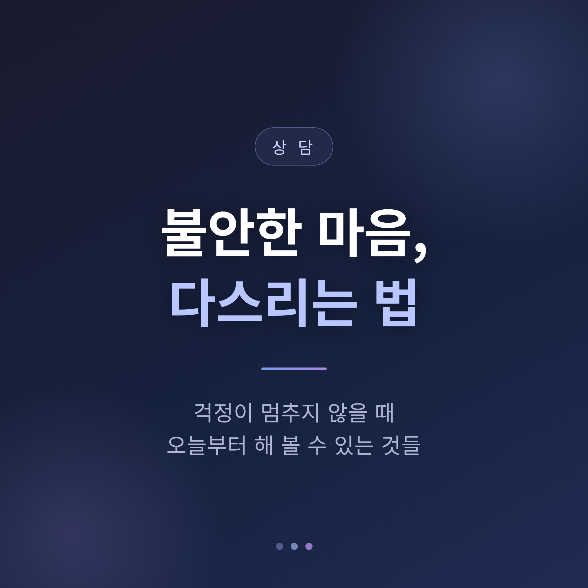
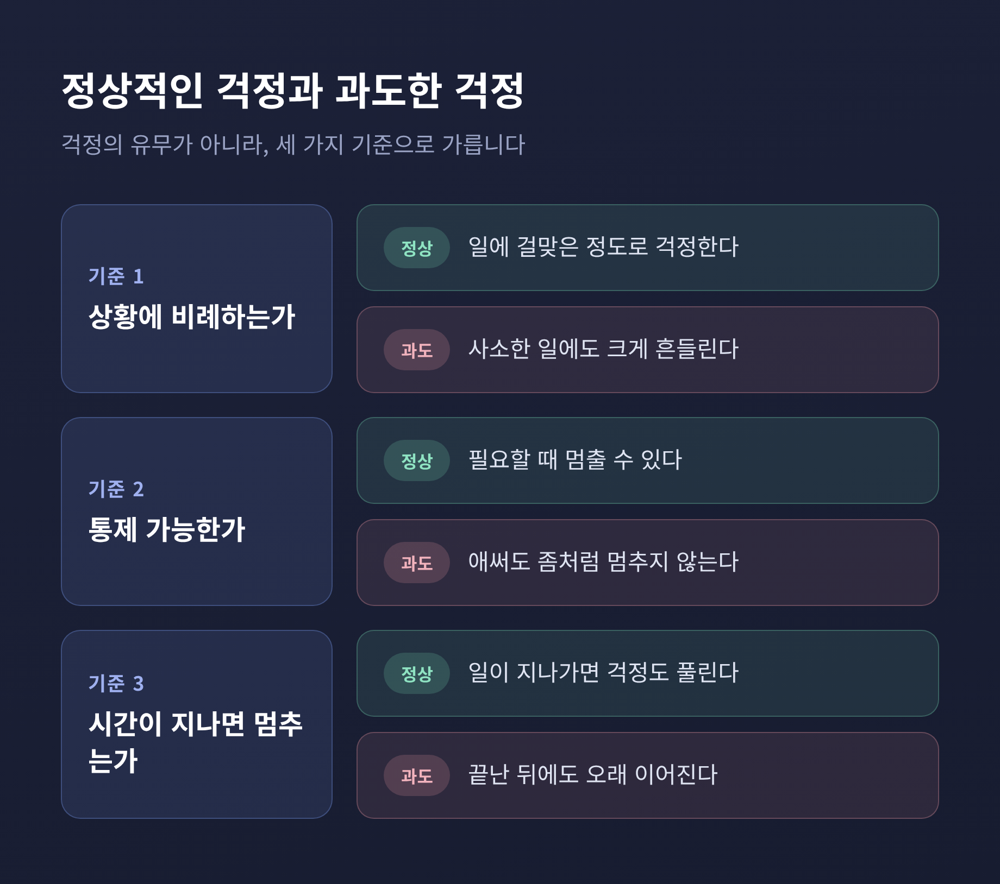
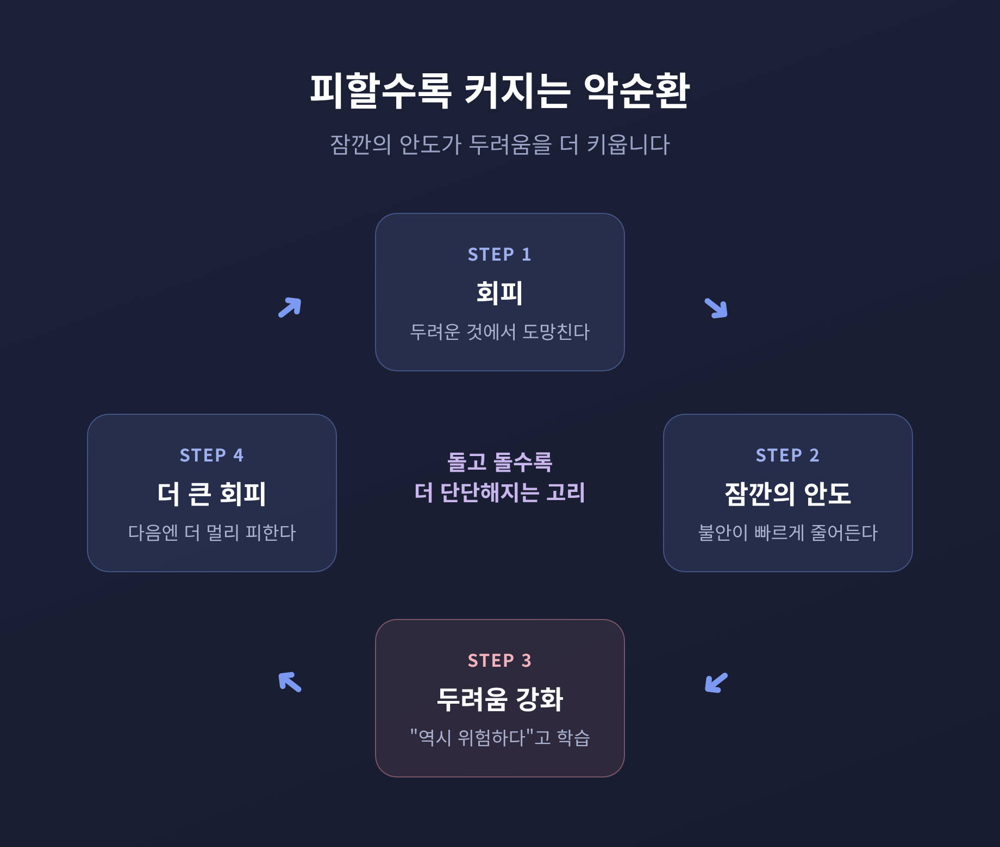
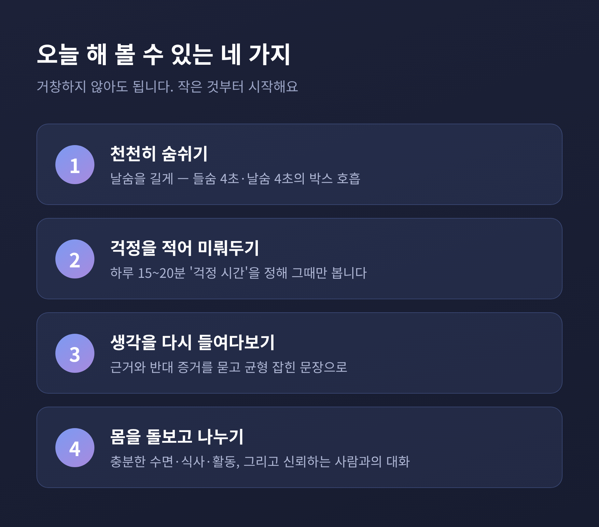
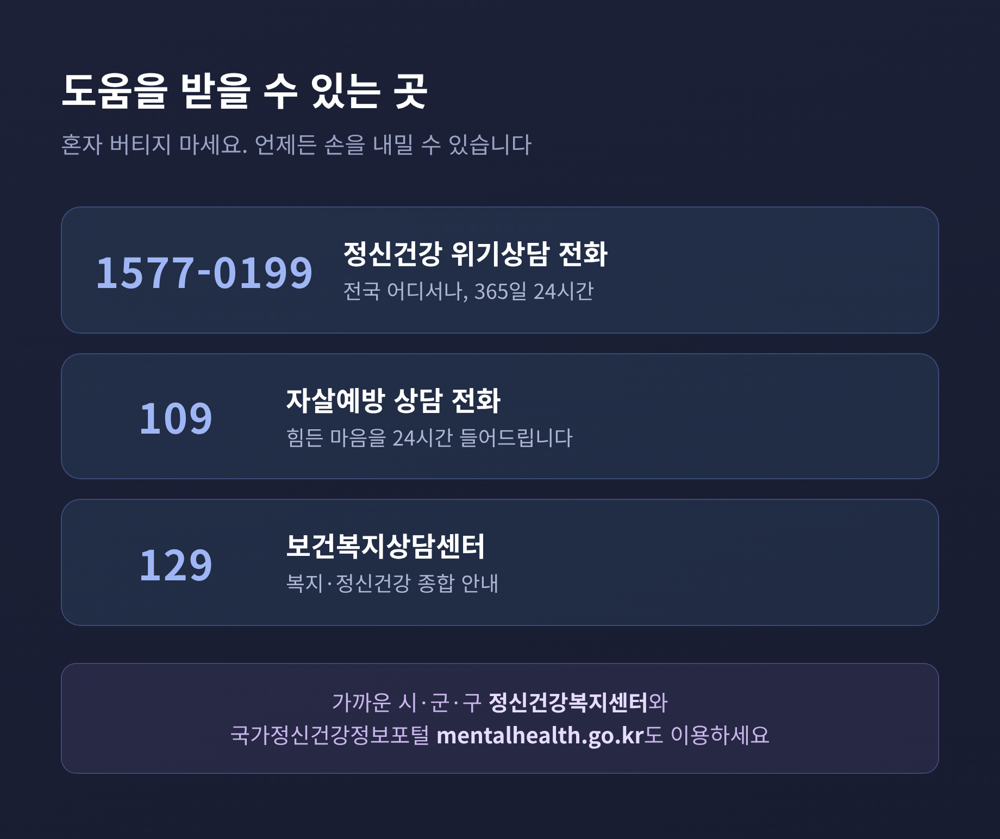

이번 글에서는 걱정이 좀처럼 멈추지 않을 때 불안을 다스리는 법을 정리해 보겠습니다.
요약부터 먼저 전합니다.
먼저 짚고 싶은 것이 있습니다. 불안은 고장난 감정이 아닙니다.
불안은 위협이나 스트레스에 대한 자연스럽고 건강한 반응입니다. 위험에 대비하고 경계를 늦추지 않도록 돕는 보호 기능을 합니다. 적당한 걱정은 미래를 준비하게 하고, 중요한 일을 잊지 않게 합니다.
보통은 일이 지나가면 걱정도 멈춥니다. 그러니 걱정한다는 사실 자체를 탓하지 않으셔도 됩니다.
문제는 다른 곳에 있습니다.

걱정이 있느냐 없느냐는 기준이 아닙니다. 핵심은 세 가지입니다.
그 걱정이 상황에 비례하는지, 스스로 통제할 수 있는지, 시간이 지나면 멈추는지를 봅니다.
예전엔 시험을 앞두고 며칠 긴장했다가 끝나면 풀렸습니다. 지금은 시험과 무관한 일까지, 끝난 뒤에도 걱정이 멈추지 않는다면 — 결이 다릅니다.
과도한 불안은 사라지지 않고, 여러 상황에서 느껴지며, 시간이 지나며 더 심해지기도 합니다. 강도가 더 세고 오래 지속되어, 여러 방법을 써도 좀처럼 멈추기 어렵습니다.
다만 이런 설명은 스스로 병명을 붙이기 위한 것이 아닙니다. 이해를 돕기 위한 것입니다. 이런 신호가 길게 이어진다면 전문가와 상의하시길 권합니다.
걱정에는 묘한 구석이 있습니다. 괴로운데도 자꾸 붙들게 됩니다.
이유가 있습니다. 걱정에 몰두하면, 두려운 결과를 마주할 때의 신체적 흥분이 잠시 낮아집니다. 일종의 회피인 셈입니다. 불편한 감정을 잠깐 피하게 해 주니, 걱정이라는 습관이 스스로 강화됩니다. 결과를 알 수 없는 상황을 못 견딜수록 걱정은 더 커집니다.
걱정이 많은 분들은 흔히 이렇게 믿습니다. "걱정해 두면 나쁜 일에 대비할 수 있다."
그런데 우리가 두려워하는 최악의 일은 원래 잘 일어나지 않습니다. 그 일이 안 일어나면, 사람은 "내가 걱정한 덕분"이라고 잘못 해석하기 쉽습니다. 그렇게 걱정이 틀렸음을 확인할 기회를 놓칩니다. 회로는 더 단단해집니다.
정리하면 이렇습니다. 걱정은 단기적으로 '뭔가 하고 있다'는 안도감을 줍니다. 그러나 길게 보면 불안을 유지하고 키우는 핵심 고리입니다.

불안에는 역설이 하나 있습니다.
가장 본능적이고 안전해 보이는 행동, 즉 두려운 것에서 도망치는 일이 오히려 불안을 키웁니다.
회피하면 불안이 빠르게 줄어듭니다. 그 안도감이 보상처럼 작용해, 뇌는 "회피하면 안전하다"고 학습합니다. 실제로는 위험하지 않았는데도 그렇습니다.
동시에 회피는 중요한 배움을 막습니다. 직접 마주했다면 "생각보다 괜찮더라"를 배웠을 텐데, 그 기회가 사라집니다. 그러면 "그 상황은 위험하다"는 믿음만 조용히 더 굳어집니다.
그래서 방향은 반대입니다. 아주 작은 단위로 조금씩 마주해 보는 것이 악순환을 끊습니다. 다만 혼자 무리하기보다 전문가의 안내 아래 안전하게 밟아 가시는 편이 좋겠습니다.

거창한 결심이 아니어도 됩니다. 작은 것부터 시작해 보시면 좋겠습니다.
첫째, 호흡입니다. 의식적인 호흡은 몸의 이완을 담당하는 신경계를 깨워 불안을 가라앉힙니다. 배에 손을 얹고, 들숨에 배가 부풀고 날숨에 배가 꺼지도록 천천히 쉽니다. 들숨보다 날숨을 길게 하면 더 편안해집니다. 들숨 4초, 멈춤 4초, 날숨 4초, 멈춤 4초의 박스 호흡도 좋습니다.
둘째, 걱정 시간을 정해 둡니다. 하루 중 15~20분을 '걱정 시간'으로 비워 둡니다. 낮에 걱정이 떠오르면 짧게 적어 두고 "이건 그때 생각하자"며 미룹니다. 정해진 시간에만 그 목록을 봅니다. 막상 그 시간이 되면 덜 급하게 느껴진다는 분이 많습니다.
셋째, 떠오른 생각을 다시 들여다봅니다. 걱정을 적고, "이 생각의 근거는 무엇이고 반대 증거는 없나"를 묻습니다. "최악 말고 가장 현실적인 결과는 무엇일까"를 따져, 균형 잡힌 문장으로 바꿔 적습니다.
넷째, 몸을 돌보고 나눕니다. 불안에 매달리기보다 충분한 수면과 양질의 식사, 꾸준한 신체활동에 마음을 둡니다. 그리고 신뢰하는 사람과 이야기를 나눕니다. 누군가 내 이야기를 들어주는 것만으로도 불안은 한결 낮아집니다.
물론 이 방법들이 모든 것을 단번에 풀어주지는 않습니다. 꾸준히 연습할 때 효과가 천천히 자리를 잡습니다.

스스로 다스리는 데에는 한계가 있습니다. 그 선을 아는 것도 중요합니다.
불안이나 걱정이 학교, 직장, 사람과의 관계 같은 일상에 지장을 주기 시작하면 전문적 도움을 구할 때입니다. 불안이 사라지지 않고 여러 상황에서 이어지며 점점 심해진다면, 또 흔한 상황에서도 강한 두려움을 느끼거나 사람 만남과 외출을 자꾸 피하게 된다면, 혼자 버티지 마시길 권합니다.
진단과 치료는 정신건강의학과 전문의와 임상심리·상담 전문가의 영역입니다. 이 글은 스스로 진단하거나 약을 정하기 위한 글이 아닙니다.
도움을 받을 수 있는 곳을 적어 둡니다.
끝으로 한 마디만 더 드리겠습니다.
불안을 완전히 없애는 것이 목표가 아닙니다. 불안과 너무 싸우지 않으면서, 함께 지내는 법을 익히는 것입니다.
— "걱정을 멈추려 애쓰기보다, 걱정과 거리를 두는 연습을 합니다."
지금 마음이 무겁다면, 오늘은 그저 숨 한 번 길게 내쉬는 것부터 시작해 보시면 어떨까요.